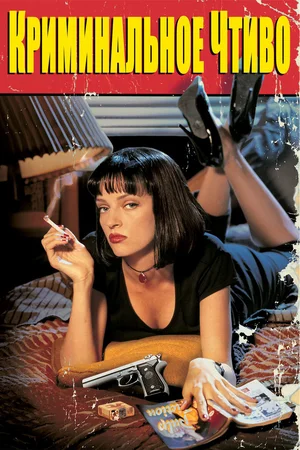

Леон
Профессиональный убийца Леон неожиданно для себя самого решает помочь 12-летней соседке Матильде, семью которой убили коррумпированные полицейские.

В первом и последнем плавании шикарного «Титаника» встречаются двое. Пассажир нижней палубы Джек выиграл билет в карты, а богатая наследница Роза отправляется в Америку, чтобы выйти замуж по расчёту. Чувства молодых людей только успевают расцвести, и даже не классовые различия создадут испытания влюблённым, а айсберг, вставший на пути считавшегося непотопляемым лайнера.
Профессиональный убийца Леон неожиданно для себя самого решает помочь 12-летней соседке Матильде, семью которой убили коррумпированные полицейские.
Двое бандитов Винсент Вега и Джулс Винфилд ведут философские беседы в перерывах между разборками и решением проблем с должниками криминального босса Марселласа Уоллеса. В первой истории Винсент проводит незабываемый вечер с женой Марселласа Мией. Во второй рассказывается о боксёре Бутче Кулидже, купленном Уоллесом, чтобы сдать бой. В третьей истории Винсент и Джулс по нелепой случайности попадают в неприятности.
